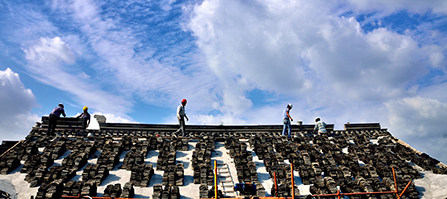
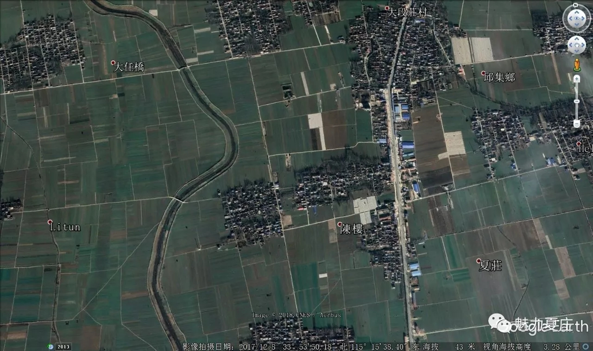
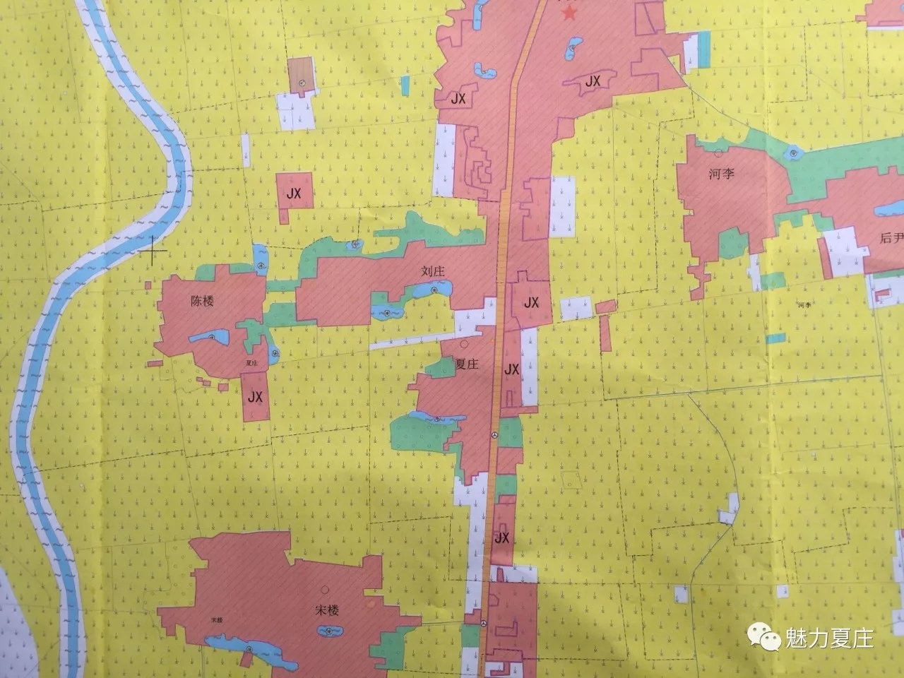
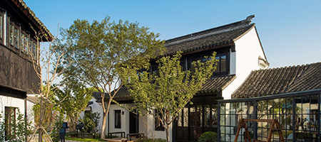

鹿邑县邱集乡夏庄行政村，下辖夏庄、刘庄、陈楼3个自然村，耕地2147亩，2098人，党员共36人。
一个家庭
和睦共处
一个学校
教书育人
一个学校
教书育人
一缕乡愁
她叫夏庄
华北水利水电大学按照省委统一部署，派驻骨干力量到鹿邑夏庄村担任驻村第一书记，组建驻村工作队，围绕省、县、乡三级党委的各项决策部署，驻村干部积极开展驻村帮扶工作，用担当负责、脱贫实效向组织和群众递上了一份满意的答卷。
自然与资源条件
夏庄行政村属于平原地带，位于华北平原南端、豫东平原东部，地质构造属周口盆地的一部分。地表土壤养分含量是：有机质含量不高，富钾贫磷，氮素不足。PH值6-8，绝大部分6.7-7.2。属亚热带季风气候和暖温带季风型气候模糊地带，具备南北方之长，四季分明，雨量充沛，冬季温差较大，降水夏秋偏多冬季偏少。年平均气温在14.5℃—15.8℃之间。平均霜期为146天，无霜期219天。属于淮河流域涡河水系，水资源较为丰富，地下水质良好，地下6米就有水，一般的井都抽不干，水质能直接饮用。
夏庄行政村是典型的内陆农业村，主要农作物有小麦、玉米、高粱、棉花、烟叶等。以养殖猪、羊、鸡、鸭、鹅等发展养殖业，以种植黄瓜、花生、蔬菜等经济作物发展种植业。夏庄行政村北3.5公里是三国曹操武平侯封地武平城，为省级文物保护单位。
夏庄行政村是典型的内陆农业村，主要农作物有小麦、玉米、高粱、棉花、烟叶等。以养殖猪、羊、鸡、鸭、鹅等发展养殖业，以种植黄瓜、花生、蔬菜等经济作物发展种植业。夏庄行政村北3.5公里是三国曹操武平侯封地武平城，为省级文物保护单位。


交通地理位置
夏庄行政村位于丘集乡政府南800米，交通便利， 210省道穿境而过，北距离永登高速丘集收费站3公里，南靠311国道。向东距离鹿邑县城20公里，向南距离郸城县城30公里，向北距离柘城县城25公里。交通区域较为明显，过境客车、货车交通量较大。
村庄概况
下辖夏庄、刘庄、陈楼3个自然村，6个村民组，525户，2098人；其中，常住人口1500人，留守儿童75人，五保户58户89人。全村党员37人，村两委委员5人（女性1人），村支书40岁，村主任54岁；村级组织运转正常，两位班子比较团结，有一定的凝聚力，党组织活动能够正常开展。全村总面积2147亩，其中耕地面积1500亩，土地流转250亩。夏庄行政村是县级贫困村，2015-2016年建档立卡贫困户16户，43贫困人口，2016年脱贫4户12人，2017年脱贫4户8人，去世2户、4人，未脱贫6户20人。2016、2017年连续两年被表彰为“全县优秀村党支部”，“一类行政村”。


社会经济发展状况
豫东地区典型的农业村庄， 主要以传统种植、养殖、外出务工为主。目前土地流转4块250亩，分别为50亩梨树园、50亩黄瓜塑料大棚、100亩楸树种植、50亩传统作物种植，土地流转的效益相对较差。全村共有养猪户3大户，生猪存栏头450头；养羊户5户，放养生羊300只。村中常年外出务工以从事建筑施工、房屋装修、海产品制作为主，建筑施工和房屋装修主要地区为威海、郑州、林州等地，海产品制作主要在山东荣成，人均年务工收入达5万元左右，外出务工成为群众增收的主要途径。截止2017年底，全村农民人均纯收入约10500元。